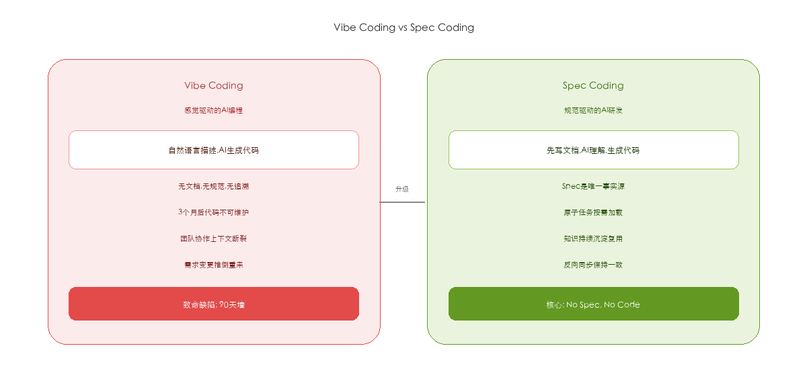
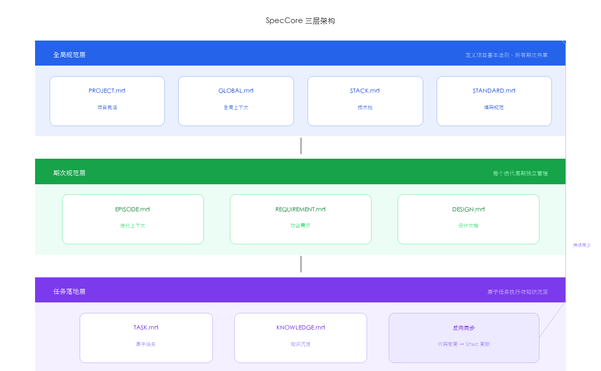
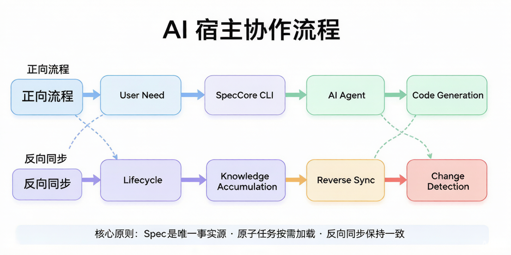
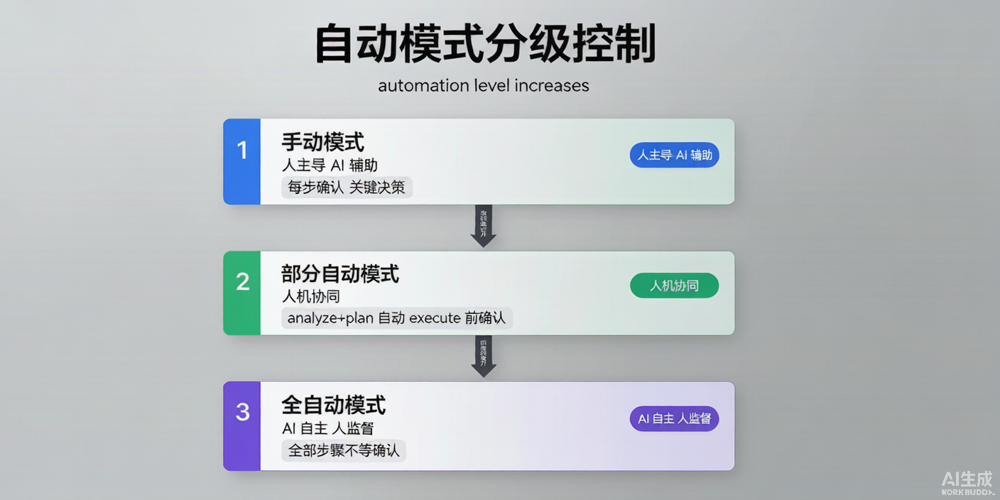

当 AI 编程从个人玩具走向团队协作，从一次性脚本走向持续交付， 我们需要的不只是一个更强的模型，而是一套完整的工程纪律。
2025 年初，Andrej Karpathy 提出了一个概念——Vibe Coding。 不用写设计文档，不用画架构图，不用定义接口。 对着 AI 说一句"帮我写一个会议室管理系统"，一个下午就能跑起来一个包含登录、CRUD、权限的完整后台。
听起来很美。直到三个月后：
这就是我们说的90 天墙（90-Day Wall）： Vibe Coding 的产出三个月后，代码库进入不可维护状态。 不是 AI 不够强——问题在于信息没有结构化。

SDD（Specification-Driven Development）并不是新概念。 早在 1990 年代，形式化方法（Formal Methods）就在航空航天、金融交易等安全关键领域使用。 Z 语言、VDM、B 方法等形式化规约工具曾被用于验证伦敦地铁信号系统和巴黎地铁 14 号线的安全属性。 但传统 SDD 的代价太高——写一份完整的形式化 Spec 往往比写代码本身还耗时， 这导致它在商业软件开发中始终未成为主流。
AI 改变了这个等式。 当 AI 可以在 5 分钟内从需求文档生成一份结构化的 Spec， SDD 不再是成本负担，而是效率杠杆。 这一转变的本质是：将"人写 Spec → 人写代码"的两段式流程，重构为 "人确认 Spec → AI 写代码 → 人审核"的三段式人机协作。
Vibe Coding 的核心问题是"信息熵增"。每次与 AI 对话都从零开始： 没有文档，没有规范，没有历史约束。代码的增长速度远超理解力的增长速度， 三个月后，没人能说清任何一行代码"为什么"在那里。
而 Spec Coding 的本质是把 AI 的高效从一次性对话延展到整个软件生命周期。 它要解决的根本问题不是"AI 能不能写出代码"，而是 "三个月后，AI 还记不记得这段代码是干什么的"。
| 方法论 | 关注点 | 主要产出 | SDD 与之关系 |
|---|---|---|---|
| TDD | 测试先行，红-绿-重构 | 测试用例 | SDD 在 TDD 之前，先定义"测什么" |
| BDD | 行为驱动，Given-When-Then | 验收场景 | SDD 的 Spec 可直接映射为 BDD 场景 |
| DDD | 领域模型，限界上下文 | 领域模型图 | SDD 的 Spec 保存领域决策，DDD 则建模 |
| SDD | 规范驱动，Spec为真 | 结构化 Spec 文档 | TDD/BDD/DDD 的上游输入源 |
SDD 不是要替代 TDD、BDD 或 DDD，而是要为它们提供唯一且精确的输入。 在一个 SDD 项目中，Spec 定义了"做什么"，TDD 保证"做对了"，BDD 验证"做得对"，DDD 建模"怎么做"。
没有规范文档，不准 AI 写一行代码。Spec 是代码的准生证。这条铁律的目的不是增加流程，而是确保每个决策都有据可查。
文档与代码不一致时，错的一定是代码。Spec 是唯一事实源。这来自 NASA 的 JPL 编码标准——代码可以重构，但规范必须稳定。
发现 Bug 或需求变更时，先修文档，再修代码。支持 30 分钟紧急 Hotfix 跳过，但 24 小时内强制补录，确保知识永不丢失。
| 层次 | 传统开发 | Vibe Coding | AI-SDD |
|---|---|---|---|
| 知识管理 | 文档与代码分离，逐渐过时 | 无文档，知识随对话消失 | Spec 即知识 文档与代码同仓版本化，变更履历完整可追溯 |
| 上下文管理 | 靠人脑记忆项目全貌 | AI 窗口爆满，断片重来 | 原子任务 2K-5K tokens 精确加载，按需注入规范 |
| 变更管理 | 口头沟通，事后补文档 | 直接改代码，因果断裂 | 反向同步 先改 Spec 再改代码，L1/L2/L3 三级冲突裁决 |
SDD 不是让开发变慢，而是让 90 天后的你感谢现在写下 Spec 的自己。
SpecCore 是一套开源的 AI-SDD 工具链。 它不替代 WorkBuddy / Trae / Qcoder 等 AI IDE， 而是在这些宿主 AI 之上提供一套规范化的研发流程。
核心理念九个字： 宪法进规则，流程进技能，数据放项目。

| 层级 | 内容 | 职责 | 关键文件 |
|---|---|---|---|
| GLOBAL | 全局宪法层 | 技术栈、命名规范、API 风格、异常码体系 | CONSTITUTION.md · INDEX.md · PATTERNS/ |
| ITERATION | 期次规范层 | 需求、分析、计划、拆分——每次迭代的完整过程 | 010-requirements/ · 020-specs/ · 030-tasks/ |
| TASK | 任务落地层 | 原子任务：REQ + TECH + TASK 自包含，2K-5K tokens | REQ.md · TECH.md · TASK.md |
GLOBAL/ITERATION/TASK 三层职责不交叉，每层只管自己该管的事
每个 Task 自包含所有上下文，AI 不用加载整个项目就能精准完成任务
L1/L2/L3 三级冲突裁决，代码与文档永不同步，支持紧急 Hotfix
每个 Feature 完成后自动提取可复用模式，下次 AI 主动检索复用
后台/H5/小程序共用一个需求文档，多端联动不改多份
纯 Markdown + YAML 驱动，零运行时依赖，任意 Git 平台可用
SpecCore 的核心设计哲学是：不要让用户记命令，让 AI 自己拼命令。

工作流程：
speccore ask 输出知识库（KB）：所有可用命令和模板execute_command 逐步执行
对于复杂意图，AI 还会自动拆分为多步骤管道：
analyze → plan → split → execute（均为 🔒 AI 命令，需宿主 AI 交互），
并在关键节点暂停，等待用户确认。
关键的改变是：AI 不再"猜"用户要什么，而是拿到精确的 Spec 后去执行。
SpecCore 的自动模式不是全有或全无。实际工作中，很多时候我们希望前几步自动跑， 到了关键决策节点（比如执行代码生成）再停下来确认。

| 模式 | 触发词示例 | 行为 |
|---|---|---|
| 手动 | 默认（不说自动） | 每步展示结果 → 用户确认 → 下一步 |
| 部分自动 | "analyze 和 plan 自动，execute 前确认" | 前两步连续执行，execute 前暂停等待 |
| 全自动 | "全自动执行" / "一键完成" | 所有步骤不等确认，全流程自动 |
SpecCore 定义了 10 种任务类型，覆盖软件研发的完整生命周期。 AI 根据不同任务类型，自动生成不同集合和深度的 Spec 文档， 既保证关键信息不丢失，又避免不必要的文档负担。
新功能开发。最完整的文档集合。如"用户登录模块"
缺陷修复。聚焦问题定位 + 回归测试。如"修复支付超时"
代码重构。关注架构影响 + 兼容性。如"迁移到微服务"
技术调研。输出调研结论 + 推荐方案。如"选型消息队列"
代码审查。生成审查清单 + 问题追踪。如"安全审计"
测试专项。完整测试计划 + 覆盖率目标。如"压测双11"
文档编写。API文档/用户手册。如"生成 OpenAPI 文档"
部署上线。关注回滚方案 + 灰度策略。如"灰度发布 v2.0"
安全加固。威胁建模 + 漏洞修复。如"修复 OWASP Top 10"
性能优化。压测报告 + 优化方案。如"数据库慢查询优化"
不同类型的任务，AI 生成的 Spec 文档集合不同。 feature 最完整（7 篇），bugfix 最精简（2 篇）：
| 任务类型 | 文档数 | ANALYSIS | TECH | TEST | REVIEW | RISK | DEPS | MONITOR | 说明 |
|---|---|---|---|---|---|---|---|---|---|
| feature | 7 | ✅ | ✅ | ✅ | ✅ | ✅ | ✅ | ✅ | 全量分析，新功能完整交付 |
| refactor | 5 | ✅ | ✅ | ✅ | ✅ | ✅ | - | - | 关注架构影响和回归验证 |
| bugfix | 3 | ✅ | ✅ | ✅ | - | - | - | - | 问题定位+修复方案+回归 |
| research | 2 | ✅ | - | - | - | - | - | - | 调研结论和推荐方案 |
| review | 2 | - | - | - | ✅ | ✅ | - | - | 审查清单和风险项 |
| test | 2 | - | - | ✅ | - | ✅ | - | - | 测试计划和风险覆盖 |
| docs | 1 | - | - | - | - | - | - | - | 目标文档直接生成 |
| deploy | 5 | ✅ | ✅ | - | - | ✅ | ✅ | ✅ | 部署计划+风险+依赖+监控 |
| security | 4 | ✅ | - | ✅ | ✅ | ✅ | - | - | 威胁分析+验证+审查+风险 |
| performance | 4 | ✅ | ✅ | ✅ | - | - | - | ✅ | 性能画像+方案+验证+监控 |
| 文档 | 定位 | 包含内容 | 对谁有用 |
|---|---|---|---|
| ANALYSIS.md | 需求分析报告 | 功能点列表（含优先级）、接口清单（方法+路径+入参+出参）、数据模型 ER 图、业务规则状态流转图、异常处理矩阵 | PM · 架构师 · 后端 |
| TECH.md | 技术方案 | 系统架构图、数据库 DDL（CREATE TABLE 含索引）、API 设计（OpenAPI 3.0 片段）、缓存策略（Redis Key 设计 + 过期时间）、核心时序图 | 架构师 · 后端 · DBA |
| TEST.md | 测试计划 | 单元测试用例表（输入+预期输出）、集成测试场景、边界测试矩阵（空值/超长/并发/超时）、性能测试方案（QPS 目标+压测脚本） | QA · 后端 · 前端 |
| REVIEW.md | 审查清单 | 安全检查（SQL注入/XSS/CSRF/鉴权绕过）、代码质量（参数校验+幂等性+索引覆盖+事务边界）、部署检查（迁移脚本可回滚+灰度方案） | Tech Lead · 安全 |
| RISK.md | 风险评估 | 风险矩阵（可能性×影响×缓解措施）、回滚方案（触发条件+步骤+验证方法）、关键路径分析（阻塞点+备选方案） | PM · Tech Lead |
| DEPS.md | 依赖清单 | 上游依赖（服务名+版本+用途+SLA）、下游影响分析（消费方+接口+影响程度）、第三方 SDK 清单（许可证+漏洞等级） | 架构师 · SRE |
| MONITOR.md | 监控指标 | 业务指标（成功率/延迟/吞吐量+阈值+P级别）、告警规则（触发条件+通知渠道+升级策略）、大盘看板（Grafana 面板定义） | SRE · 运维 · on-call |
不是每类任务都需要全部 7 个文档。SpecCore 的理念是"该有的一个不少，不该有的一个不多"—— feature 走全套，bugfix 只关心问题定位和回归。
SpecCore 的 GLOBAL 层是跨项目的知识枢纽：
.speccore/
GLOBAL/
CONSTITUTION.md # 所有项目共享的技术宪法
INDEX.md # 需求跨项目目录
PATTERNS/ # 经验模式库（只增不减）
ITERATIONS/
Iteration-008-meeting-system/ # 会议室系统
Iteration-003-payment/ # 支付系统每个 Feature 完成后，AI 会自动总结可复用模式写入 PATTERNS， 下次遇到类似场景会说："这个登录功能我们之前做过，上次踩了 Redis 超时的坑，这次我帮你加上重试机制和降级策略。"
在一个会议室管理系统（4 个端、30+ API、7 张数据表）的完整开发中：
| 指标 | Vibe Coding | SpecCore SDD |
|---|---|---|
| 分析报告 | 无 | 7 个 Spec 文档 + ER 图 + SQL |
| 任务拆分 | 手动 30 分钟 | AI 自动拆分 |
| 上下文 tokens | 15K-20K / 次 | 2K-5K / 次 |
| 需求变更追踪 | 不可追踪 | 反向同步 + 变更履历全记录 |
| 团队接手成本 | 数天阅读代码 | 读 Spec 文档即可理解 |
npm install -g speccore # CLI 命令
speccore init # CLI 命令
speccore ask "创建会议室管理系统的第一个迭代" # CLI 命令，路由至 AI 分析在 WorkBuddy / Trae / Qcoder 等 IDE 中， 只需在对话中 @speccore 或使用 /spec-ask 命令，
用户：/spec-ask 分析 Q1 的所有需求，拆分任务，分析+计划自动执行，开发前让我确认
AI：我将执行：step1-2 自动（analyze + plan），step3（execute）前暂停确认。是否开始？
用户：开始
→ AI 自动完成分析和计划，生成 7 个 Spec 文档，然后在执行前问"继续？"
SpecCore 完全开源，MIT 协议：
GitHub: github.com/windfallsheng/SpecCore-ts
Gitee: gitee.com/windfullsheng/spec-core-ts
Vibe Coding 不会消失——原型阶段它依然是无敌的。 但当项目进入第 2 个月、第 3 个迭代、第 5 个开发者加入时， Spec Coding 是唯一的解法。
不是让 AI 少干活，而是让 AI 干对活、把活干完、把知识留下。
No Spec, No Code.